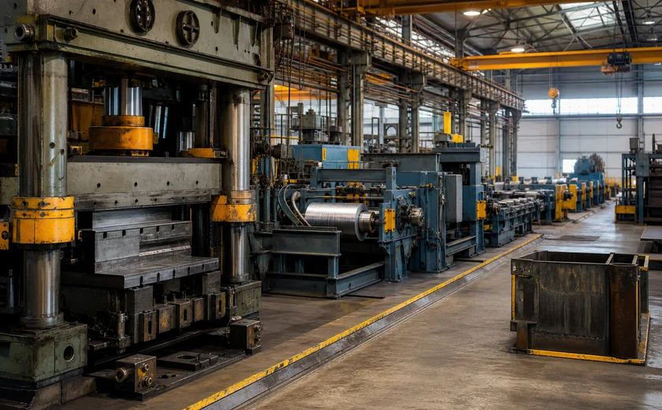
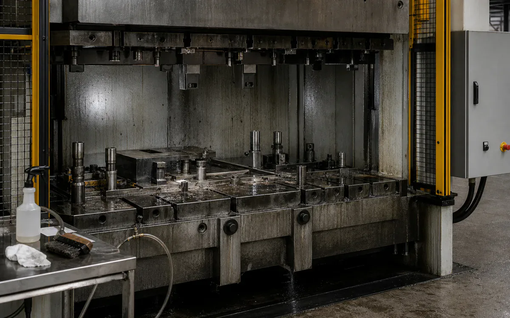
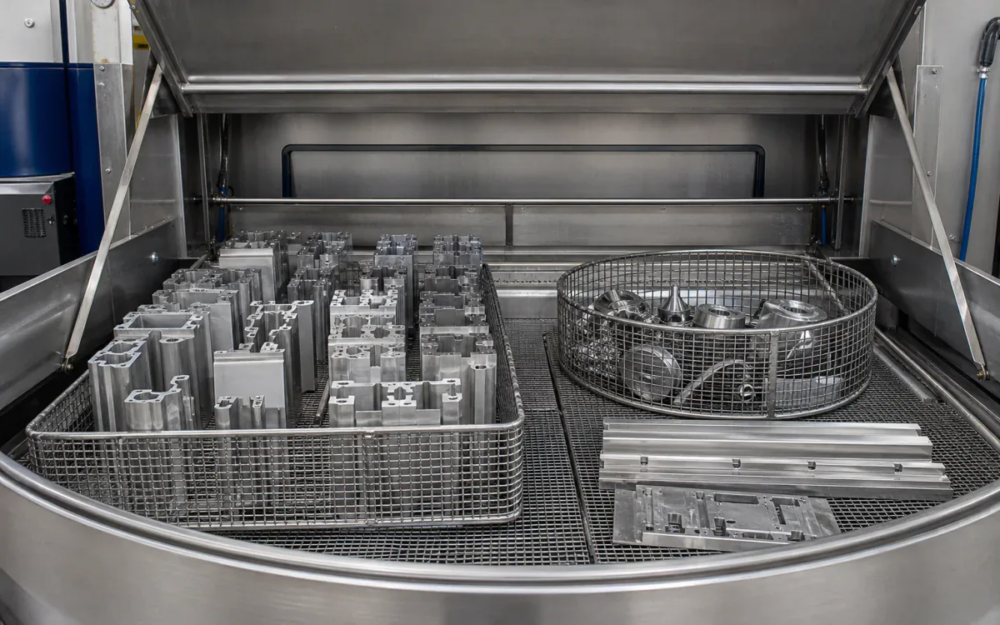
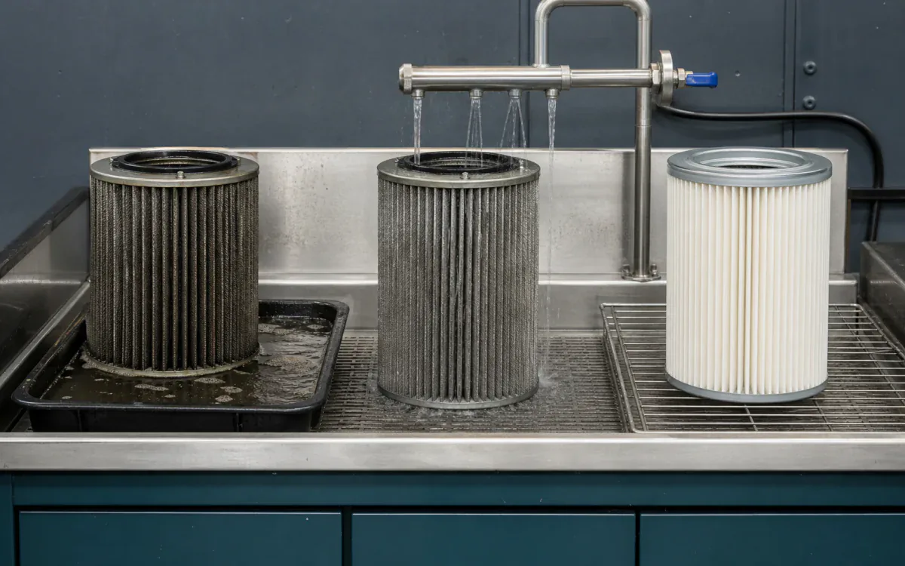

Get production back, not another HazCom meeting.
Strong cleaning for extrusion, processing, warehousing, and plant maintenance — with the documentation your technical review needs.
- CleanParts, machine tools, floors, conveyors, tanks, heat exchangers, molds, dies, and utility piping
- RemoveCutting oil, hydraulic fluid, grease, carbonized residue, adhesive film, rust, and mineral scale
- MethodParts wash, controlled foam/spray, manual agitation, or isolated circulation selected by asset and soil
- BoundaryLOTO and de-inventory equipment, verify coatings/seals/metallurgy, protect controls and bearings, and segregate incompatible waste streams.
- Open task controls and documents
Why VertKleen fits Manufacturing.
Plant maintenance runs on acid descaling, caustic CIP, and solvent degreasing, each one adding HazCom and exposure risk. VertKleen does those same jobs at an HMIS 0-0-0 rating, so there's less to handle and a cleaner package to put in front of technical review.
Review field evidence
What Manufacturing buyers need documented first.
Acid descalers, caustic CIP cleaners, and solvent degreasers used across lines, floors, parts, and maintenance bays.
Bundle: HCR for scale and rust, CR for alkaline cleaning, CR HD for heavy grease, Descaler for mineral deposits.



VertKleen products for Manufacturing.
VertKleen options for Manufacturing workflows.
Field proof from Manufacturing sites.
Documented work from the VertKleen field library.


Remove process oil, carbon, grease, and scale from isolated production assets with a measurable return-to-process endpoint.
Task controls first. Product choice follows the asset, deposit, materials, operating window, and discharge route.
- Task
- Remove process oil, carbon, grease, and scale from isolated production assets with a measurable return-to-process endpoint.
- Asset / substrate
- Parts, machine tools, floors, conveyors, tanks, heat exchangers, molds, dies, and utility piping
- Soil / deposit
- Cutting oil, hydraulic fluid, grease, carbonized residue, adhesive film, rust, and mineral scale
- Starting chemistry
- VertKleen CIP HCR, VertKleen CIP CR, VertKleen CR HD, VertKleen Descaler
- Concentration
- Use the current label/TDS range and establish the weakest effective starting point through a material coupon and soil-loading trial.
- Process controls
- Record bath/surface temperature, concentration, dwell, spray/brush/flow agitation, rinse quality, dry time, and bath-loading limits.
- Shutdown / containment
- LOTO and de-inventory equipment, verify coatings/seals/metallurgy, protect controls and bearings, and segregate incompatible waste streams.
- Verification endpoint
- Water-break or white-wipe acceptance where appropriate, specified surface energy/cleanliness, restored flow or pressure drop, and no corrosion/finish change.
Review the current safety and application file.
Confirm revision, product identity, material compatibility, and application scope before site approval.
Bring us your Manufacturing cleaning task.
The request opens with asset, soil, operating conditions, materials, wastewater route, and buying deadline already prompted.